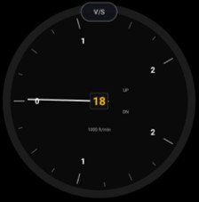

Possibilités
- Affiche la vitesse verticale en ft/min.
- Analogique seul : en numérique, le vario est intégré à NUMALT.
- Pastille de titre affichée en haut du cadran (masquable via Options ▸ « Masquer le titre »).
Gestes supportés
Appui long : —
Double-tap : —
Réglages liés
- Source vario : GPS ou baromètre (onglet Cockpits).
- Unité : ft/min ou m/s selon l'unité d'altitude (onglet Cockpits).
